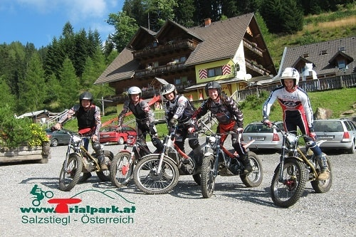
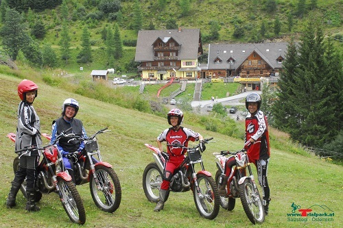
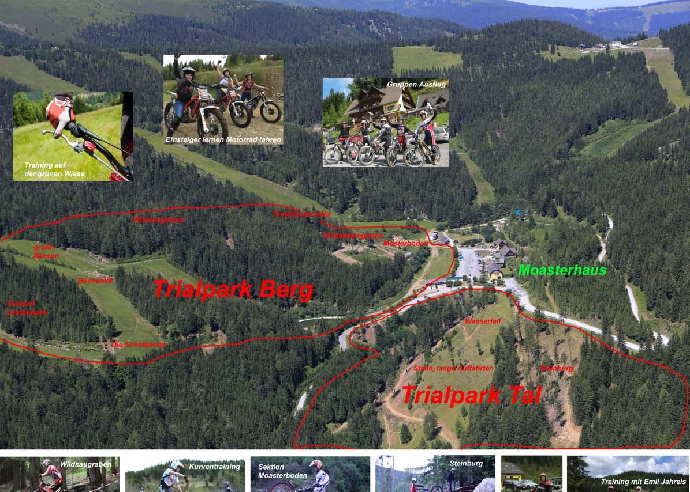
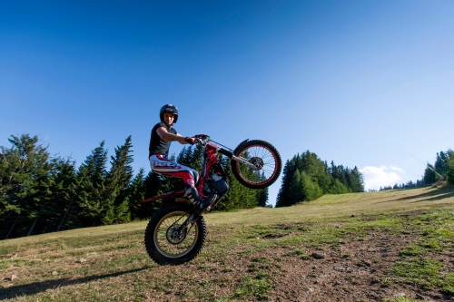
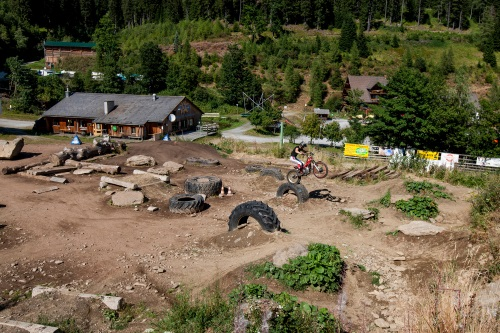

Trialpark
.png)


Trialpark Salzstiegl in der Steiermark
Trial fahren in der West-Steiermark/Österreich
 
Trial fahren heißt: Können im Kopf und PS unterm Hintern
Der Begriff Trialsport kommt aus England und wird abgeleitet vom englischen "to try it", versuche es. Trial ist Geschicklichkeitsfahren im Gelände und Akrobatik mit speziellen Motorrädern Langsamkeit einüben und daran Spaß haben
Trial Erlebnis heißt:
Hindernisse im Gelände, wie auch im Leben überwinden lernen. Körperbeherrschung, Sicherheit und Konzentration mit dem Zweirad entwickeln - eigene Grenzen spüren und akzeptieren. Durch direkt Erlebnisse mit den Gegebenheiten der Natur Selbsterfahrung und Persönlichkeitsentwicklung verbunden mit Spaß, Abenteuer und ungewöhnlichen Aufgaben. Erlernen von Teamwork - lernen durch die Gruppe Vermittlung von theoretischen und lebenspraktischen Inhalten learning by doing. Es ist die ideale Motorsportart, um Jugendlichen und Erwachsenen den lustvollen Umgang mit dem Kraftfahrzeug zu ermöglichen und gleichzeitig einen verkehrserzieherischen Einfluss auszuüben.
Trialfahren mit eigener Trialmaschine ohne Trainer:
Im abwechslungsreichen Trial Gelände immer wieder etwas Neues ausprobieren. Speziell für die Vielfahrer haben wir einzelne interessante Sektionen in denen Du Dich immer wieder verbessern kannst. Unser Trial Gelände ist genehmigt und bietet für Anfänger bis Könner sehr gute und interessante Trial Trainingsmöglichkeiten. Enduros, KTM Freerides mit Trialbereifung sind leider nicht erlaubt.
Keine Voranmeldung mit eigener Trial notwendig. Der Tageseintritt ist vor dem Fahren an der Rezeption im Mosterhaus zu begleichen.
Trialfahren mit einer von 15 Trial-Verleih Maschinen mit Trainer:
Wenn du das erste Mal Trial fahren probierst, ist es notwendig einen Trialtrainer dazu zu buchen. Das gibt dir Sicherheit und schont Deine Knochen und unsere Maschinen. Von Anfänger bis Könner kannst du dieses Abenteuer wagen, denn Spaß und Lernen ist das Ziel dieser Trainingsstunden. Ein Trainer kann bis zu 4 Personen gleichzeitig unterrichten. Eine Voranmeldung ist unbedingt notwendig. Wir fahren bei jedem Wetter.
Trial Strecke für Motorradbegeisterte:
Beim Trialfahren am Salzstiegl findest du ein genehmigtes 19,5 ha großes, abwechslungsreiches Gelände auf 1.320 m Seehöhe mit Wiesen, Wald, Steinen, Gräben und vielen natürlichen und einigen künstlich angelegten Hindernissen. Für weitere Abwechslung sorgen die ausgesteckten Sektionen. Du bist wahrscheinlich im schönsten Trial Park Österreichs. Immer wieder sind unsere Gäste von der Kombination "Abenteuer pur" und "Komfort" im ***Erlebnisgasthof Moasterhaus begeistert. Hier hast du alle Möglichkeiten deinen Sport auszuleben, zu genießen. Aber auch der Rest der Familie oder deine Freunde finden hier viel zu tun.
-
Sektionsplätze fix:
- Moasterboden
- Hinkelsteingarten
- Schlangengrube
- Teutoburgerwald
- Schlangengrube
- Wildsaugraben
- Lumberjack
- Steine-Buchenlift
- Die Schottische
- Wasserfallboden
- alte Ruine
- Steinburg
Trial Urlaubs Angebote
Trial-Urlaub mit der ganzen Familie oder auch individueller Urlaub angepasst an jedes Niveau
Gemeinsam mit professionellem Trainer die eigene Trial Technik verbessern und sogar die ganze Familie mitnehmen. Für die Kinder gibt es ein tolles Action Programm und für die Frau oder Freundinn gibt es Kräuterwanderungen mit Regina, Entspannungen in der Sauna oder einfach die Natur genießen.
 Trial Stil verbessern und spezielle Techniken lernen - hilfreich auch für Endurofahrer:
Bei uns fahren Trialstaatsmeister und sehr gute Trial Trainer. Mit der richtigen Technik fährt jeder gleich um Klassen „Spuren" besser.
...und so geht's...
Es wird kein Führerschein benötigt um im Trial-Gelände zu fahren.
unter +43 3141 2160 oder info@salzstiegl.at so früh wie möglich einen Termin reservieren oder Gutschein zum Verschenken bestellen.
Haftungsausschuss zum Ausdrucken, Ausfüllen und Mitnehmen.